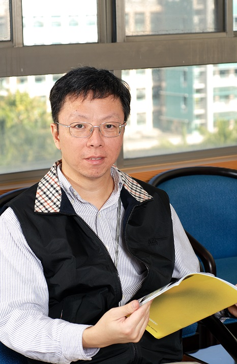

|
 |
||||
高勝助Education: Ph.D. in Computer Science, Ohio State University, USAExperience: Associate Professor, Department of Applied Mathematics, National Chung Hsing University, Convener of the Network Management Group (NM) of the Republic of China OSI Protocol Standard Draft, Member of the Network Management Group (NM) of the Republic of China OSI Protocol Standard Draft, Research in the Department of Computer Science, Ohio State University Assistant, Teaching Assistant, Department of Mathematics, Ohio State University, Assistant Professor, Department of Applied Mathematics, National Chengchi University Areas of expertise: Computer Networks, Systems and Network Management, XML Data Processing, Cloud Computing tel: (04)2284-0497 ext 708 webpage: http://snmlab.cs.nchu.edu.tw/professor.asp email： sjkao@cs.nchu.edu.tw |
黃春融Education: Ph.D. in Electrical Engineering, National Cheng Kung UniversityExperience: Postdoctoral research at the Institute of Information Science, Academia Sinica Areas of expertise： Computer Vision, Multimedia Signal Processing, Medical Image Processing tel： (04)2284-0497 ext 805 webpage： http://cvml.cs.nchu.edu.tw/biography.html email： crhuang@nchu.edu.tw |
范耀中Academic background: PhD in Information Engineering, National Tsinghua Universityexperience： Visiting Scholar at Penn State University Areas of expertise： Data Mining, Big Data Management, Social Networks, Mobile Data Management tel： (04)2284-0497 ext 704 webpage： http://web.nchu.edu.tw/~yfan/ email： yfan@nchu.edu.tw |
|  | |||||
王行建education： PhD in Electrical Engineering, Princeton University, USAexperience： Researcher at AT&T Bell Labs, USA Areas of expertise： VLSI Design, Digital System Testing, CAD tel： (04)2284-0497 ext 910 webpage： http://vlsilab.cs.nchu.edu.tw/professor.html email： sjwang@cs.nchu.edu.tw |
郭姝妤education： Bachelor, Master, PhD, Department of Information Engineering, National Jinan International Universityexperience： Assistant Professor, Department of Information Engineering, National Taipei University of Technology Areas of expertise： Metaheuristic, Optimization, Financial Technology, Quantum Information Science, and Wireless Sensor Network tel： (04)2284-0497 ext 812 webpage： https://sites.google.com/view/shuyukuo/ email： shuyuk@nchu.edu.tw |
林偉education： Ph.D. in Computer Science, University of Texas at Austin, 1985experience： Associate Professor, Department of Electrical Engineering, University of Hawaii, Assistant Professor, Department of Electrical Engineering, Pennsylvania State University, US Areas of expertise： Wireless Networks, Network Switching and Routing, System Performance Evaluation, Parallel/Distributed Systems tel： (04)2284-0497 ext 907 webpage： email： wlin@nchu.edu.tw |